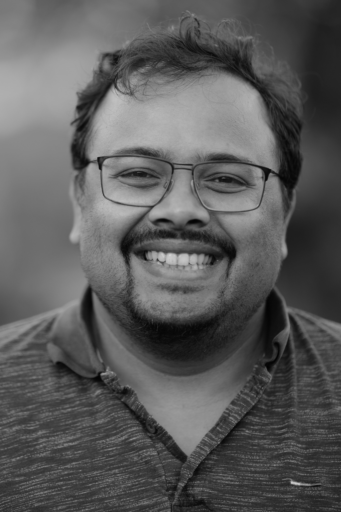

Photo credit: Vladimir GusevNikhil S. Mande
About meI am a lecturer (assistant professor) in the School of Computer Science and Informatics at the University of Liverpool since January 2023.
Until December 2022, I was a postdoctoral researcher in the Algorithms and Complexity Group at CWI, hosted by Ronald de Wolf. Before this, I was a postdoctoral researcher in the Department of Computer Science at Georgetown University, where I was hosted by Justin Thaler.
Before that, I was a research scholar in the School of Technology and Computer Science at TIFR Mumbai, where Arkadev Chattopadhyay was my advisor. A bio (last updated June 2026) can be found here.
EducationPh.D. in Computer Science in 2018 from the Tata Institute of Fundamental Research, Mumbai.
- Awarded TAA-Sasken Best Thesis Award for 2018-2019.
M.Sc. in Applications of Mathematics (with a specialization in Computational Mathematics) in 2013 from Chennai Mathematical Institute, Chennai
- Awarded CMI Gold Medal of Excellence.
B.Math. (Hons.) in 2010 from Indian Statistical Institute, Bangalore
Research interestsI am broadly interested in the areas of quantum computing and computational complexity theory. More specifically, I have an interest in (classical and quantum)(query complexity and communication complexity), analysis of Boolean functions, approximation theory, quantum computing, Boolean circuit complexity, and the connections between them.
Theses and projects
- My Ph.D. thesis is titled "Communication Complexity of XOR Functions". A version can be found here.
- Project as part of Ph.D. credits requirement titled "On the complexity of powering over finite fields in constant depth circuits" at TIFR under the guidance of Arkadev Chattopadhyay in Aug 2014-Feb 2015.
- Master's thesis titled "Spectral Graph Theory" at CMI under the guidance of Prajakta Nimbhorkar in Jan 2013 - Apr 2013.
- Project titled "Minimum variance hedging of American and European options using the binomial model" at TCS, Hyderabad under the guidance of M. Vidyasagar in the summer of 2009. Sponsored by the Indian Academy of Sciences.
All of my papers are available in the public domain: either on arXiv, or on ECCC, or on both. A full list of publications can be found here.
Publications
Supervision
Year/period Activity Role Institution Student(s) Level 2025- PhD supervision Primary supervisor University of Liverpool Joe Morris PhD 2025- PhD supervision Co-supervisor University of Liverpool Taha Abdlsalam 2024- PhD supervision Co-supervisor University of Liverpool Ziad Ismaili Alaoui 2025 COMP702: M.Sc. project supervision Primary / secondary supervisor University of Liverpool Primary: 7; secondary: 7. Master's 2024 COMP702: M.Sc. project supervision Primary / secondary supervisor University of Liverpool Primary: 6; secondary: 6. 2023 COMP702: M.Sc. project supervision Primary / secondary supervisor University of Liverpool Primary: 4; secondary: 4. 2025–26 COMP390: UG project supervision Primary / secondary supervisor University of Liverpool Primary: 7; secondary: 6. Undergraduate 2024–25 COMP390: UG project supervision Primary / secondary supervisor University of Liverpool Primary: 7; secondary: 9. 2023–24 COMP390: UG project supervision Primary / secondary supervisor University of Liverpool Primary: 3; secondary: 4. All courses below were taught at the University of Liverpool.
Teaching
Year/period Course Role Details 2025–26 COMP202: Complexity of Algorithms Module Coordinator ~300 students. 2024–25 COMP202: Complexity of Algorithms Module Coordinator ~275 students. 2024–25 COMP335: Communicating Computer Science Module Coordinator 6 students. 2023–24 COMP202: Complexity of Algorithms Module Coordinator ~340 students. 2023–24 COMP335: Communicating Computer Science Module Coordinator 8 students. Citation for Teaching award nomination. Previously, I was a teaching assistant for Automata and Computability at TIFR, Mumbai in 2016, and for Design and Analysis of Algorithms at CMI, Chennai in 2013.
Professional service
- I have served on the program committees of FSTTCS 2025, ESA 2024, and FSTTCS 2023.
- I am the Equality, Diversity, Inclusion, and Wellbeing (EDI&W) lead for the School of Computer Science and Informatics (CSI) at the University of Liverpool. Our website is here and is in the process of being updated. I am a member of the CS&I outreach team of our university. From 2023 to 2025 I led this team. As part of our outreach activities we organize local school visits to our department. These visits are roughly 4-hours long and are targeted at KS3 students (ages roughly 11-14) to motivate them to pursue CS as a subject for higher education. If you're based in or around Liverpool, and you'd like to visit us as part of these visits (or even otherwise), please get in touch with me!
- I have been a member of the CWI PhD Activity Committee.
- I have been a member of the Science Popularization and Public Outreach Committee of TIFR.
- I was the coordinator of the STCS Student Seminar (≈ Theory lunch) in TIFR from 2014-18.
- A (probably incomplete) list of conferences and journals that I have reviewed for: ACM ToCT, CCC, Computational Complexity, DISOPT, DMTCS, ESA, FOCS, FSTTCS, ICALP, IEEE Trans. IT, IPL, ISAAC, QIC, QIP, Quantum, RANDOM, SICOMP, SODA, STACS, STOC, The Computer Journal, TheoretiCS, TQC, ToC.
Extracurricular activities
- I enjoy speedcubing. I have been associated with the World Cube Association as a member of the WCA Regulations Committee, and earlier as the senior delegate for South East Asia and India. An achievement I'm particularly proud of is being the first Indian to officially solve a Rubik's cube blindfolded in under a minute (including memorization time). I've held several national records in the past in the events of solving 3x3 blindfolded, 4x4 blindfolded, 5x5 blindfolded, multiple 3x3's blindfolded, and fewest moves challenge. My full speedcubing profile can be found here.
- While I don't play much anymore, I enjoy playing lots of sports. Some of my favourites include volleyball, table tennis, ultimate frisbee, badminton, tennis.
- I enjoy playing Foosball.
- I (used to) enjoy playing Minesweeper in my free time. My best time is 74 seconds on the expert mode.
- I enjoy playing board games (thanks to RP for introducing them to me). You'll often find me online on BGA.
- I also have tons of other miscellaneous hobbies that might be too many to list here. Some include juggling, playing chess, solving cryptic crosswords, and playing PC games. I have also done a fair amount of Lindy Hop and improv theater in the past.
Email: nikhil DOT s DOT mande AT gmail DOT com
Contact
DBLP
Links
Google Scholar.
ECCC Fixes, an amazing browser extension by Suhail Sherif that opens ECCC PDF's in browser rather than downloading them, and also handles a bug in the report submission process. Available for Chrome and Firefox. Also check out this wonderful YouTube channel.
Check this website for an overview of the wonderful theoretical computer science community in Liverpool.
Interested in theoretical computer science research in Amsterdam? See this website.
Google scholar links of my mother, my father. Fun fact: All three of us have an Erdős number of 3 (under a liberal definition of Erdős number).
{kind=link}